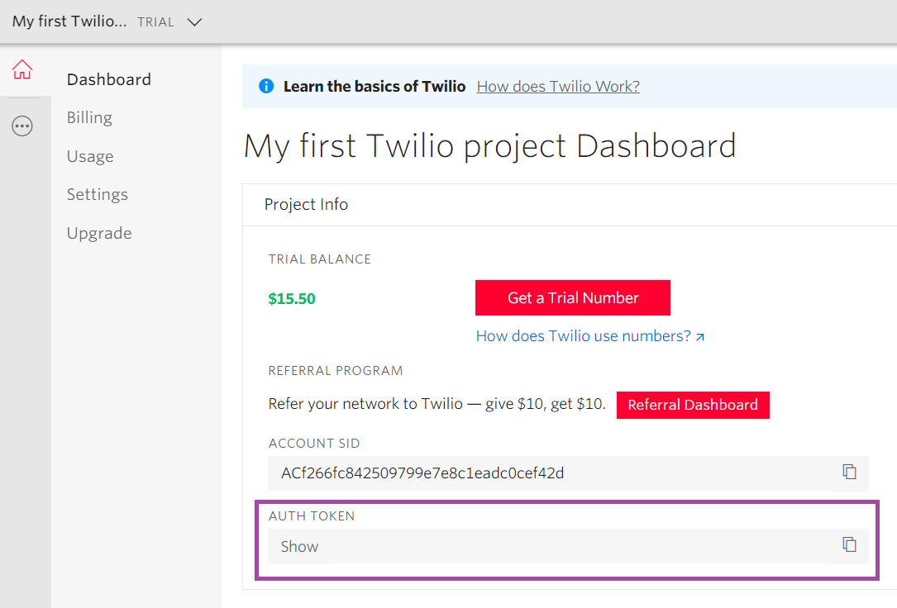

Twilio Authorization Token. Scope Objects: Conversational Flows Instance Description
To integrate with WhatsApp using the Chatbots Channels API, you have to set the Enable WhatsApp property to TRUE. After activating this property, the WhatsApp Partner property becomes available. There, you have to select the partner of your choice (for example, Twilio), and in the Twilio Token property you have to configure the Auth Token given by Twilio.  Read the document Chatbots using Whatsapp: How to set up Twilio for information on how to get that Auth Token. AvailabilityThis property is available since GeneXus 16 upgrade 10. |